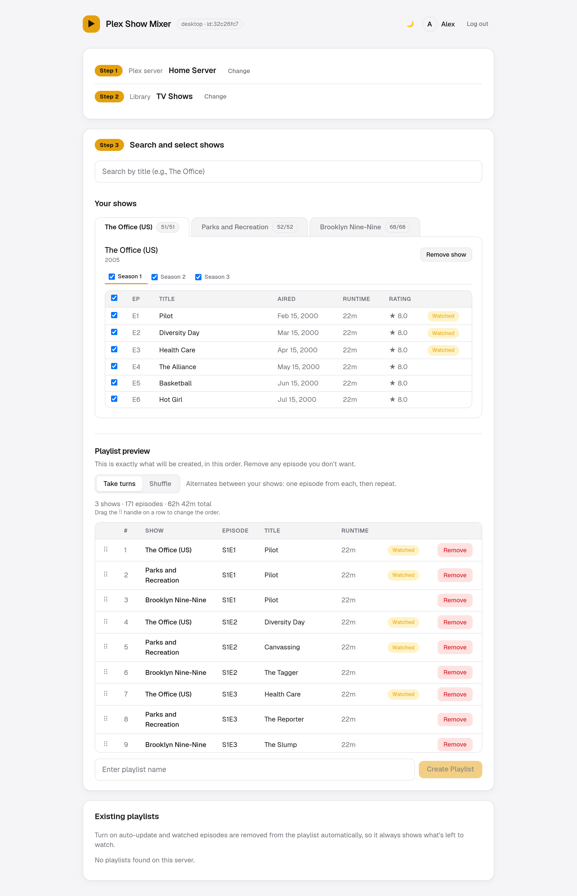
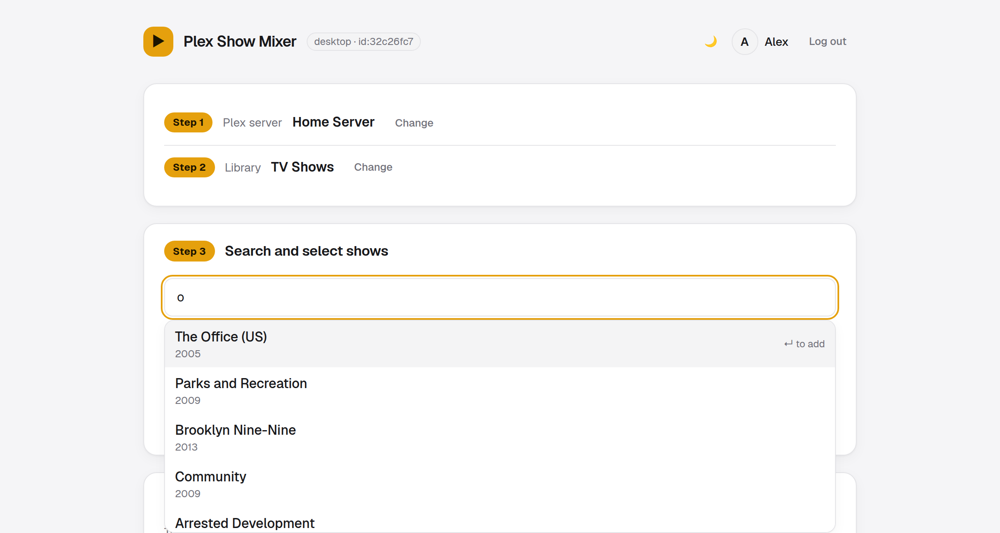
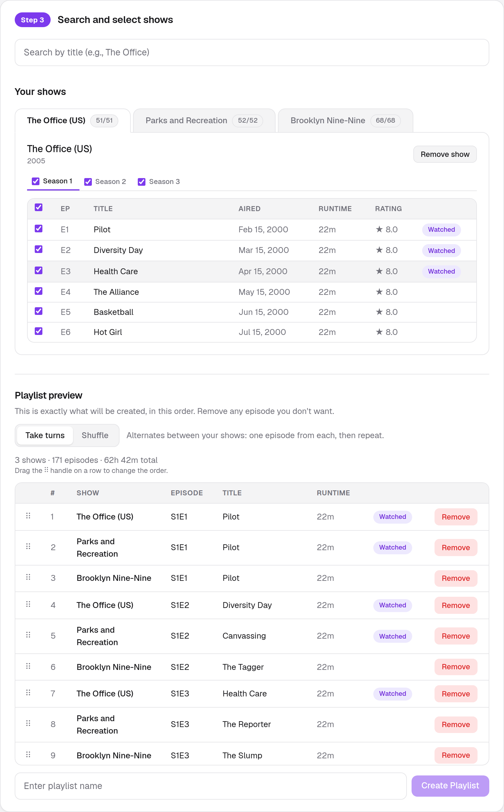
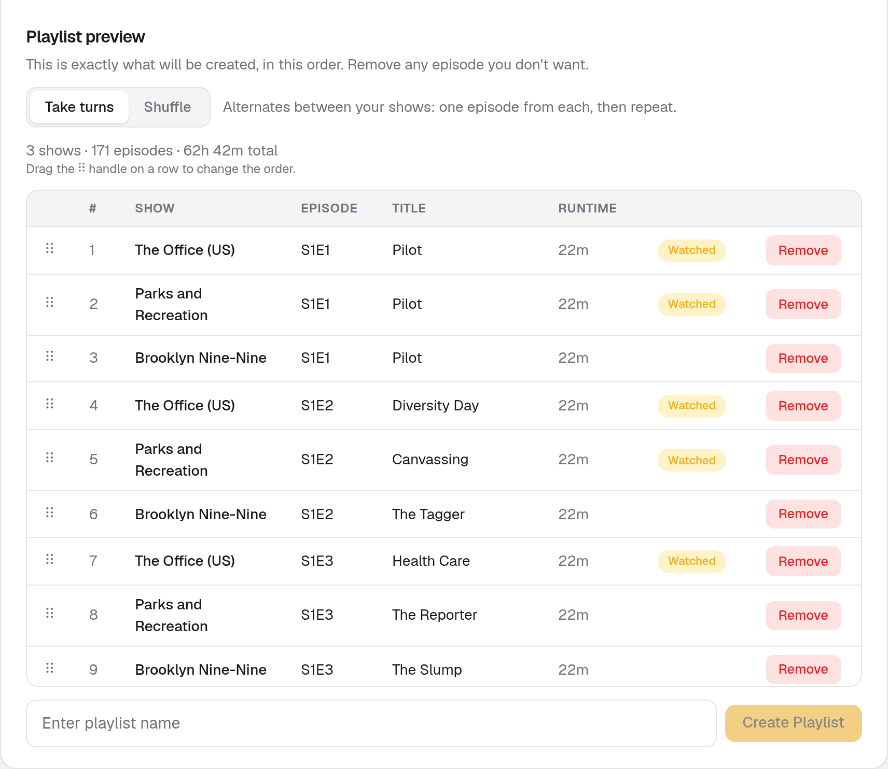
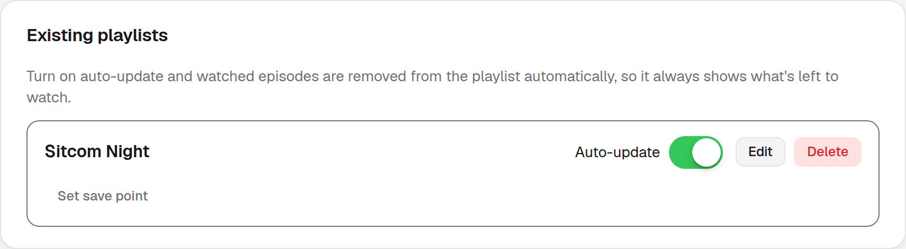

Build Plex playlists that mix episodes from several TV shows. Watched episodes are removed automatically, so a playlist always shows what is left to watch.

One small self-hosted app that sits next to your Plex server.
Search your Plex TV library, then choose shows, seasons and individual episodes.
Alternate between shows, or shuffle everything. Drag rows to fine-tune the order.
See exactly what will be created, with runtime, air dates, ratings and watched status.
Episodes are removed from a playlist once you have watched them.
Reset a playlist to an earlier state whenever you like.
Several people and Plex Home profiles can share one install, each with their own playlists.
Light and dark themes are built in. Screenshots use sample data.




You need Docker and a Plex account. Pick whichever way you prefer.
No files to write. Run it in the folder where you want the app's files kept; the data and secrets folders are created there for you.
docker run -d --name plex-show-mixer \ -p 6767:6767 \ -v ./data:/app/data \ -v ./secrets:/app/secrets \ --restart unless-stopped \ gurjaps/plex-show-mixer:latest
Better if you want the setup written down and easy to change. Save this as docker-compose.yml, then run docker compose up -d.
services:
plex-show-mixer:
image: gurjaps/plex-show-mixer:latest
container_name: plex-show-mixer
ports:
- "6767:6767"
volumes:
- ./data:/app/data
- ./secrets:/app/secrets
restart: unless-stopped
healthcheck:
test: ["CMD-SHELL", "wget -qO- http://127.0.0.1:6767/ || exit 1"]
interval: 30s
timeout: 5s
retries: 3
docker compose up -d
Go to http://localhost:6767, or use your server's address if it runs on another machine.
The app shows a short code. Enter it at plex.tv/link, then come back and confirm. Your Plex password is never seen or stored.
Choose the Plex server and TV library to build playlists on. Playlists are built from one server at a time.
Search, press Enter to add shows, choose seasons and episodes, pick Take turns or Shuffle, name it, and hit Create Playlist. Turn on Auto-update and you're done.
data and secrets, and store them separately. data holds the app's state; secrets holds the key that encrypts your stored Plex tokens.
Auto-update keeps your Plex token so it can work while you are away. Tokens are stored encrypted (AES-256-GCM) in data/. On first run the app creates the key that unlocks them in secrets/, a different folder, so a copy of data/ alone (a backup, a shared drive) is useless. There is nothing for you to set up.
secrets volume. If you start the container without -v ./secrets:/app/secrets, the key is lost whenever the container is recreated and everyone has to sign in with Plex again. Nothing else breaks.Prefer to manage the key yourself, for example as a Docker secret? Generate one and point the app at it. This replaces the automatic key.
mkdir -p keys openssl rand -base64 32 > keys/token_key docker run -d --name plex-show-mixer \ -p 6767:6767 \ -v ./data:/app/data \ -v ./keys/token_key:/run/secrets/token_key:ro \ -e TOKEN_ENCRYPTION_KEY_FILE=/run/secrets/token_key \ --restart unless-stopped \ gurjaps/plex-show-mixer:latest
Create the key file before starting: if it is missing, Docker makes an empty folder in its place and the app won't start. You can also pass the key itself as TOKEN_ENCRYPTION_KEY.
All optional environment variables.
| Variable | Purpose |
|---|---|
PORT | Port to listen on (default 6767). |
TOKEN_ENCRYPTION_KEY | Optional. Your own 32-byte base64 key, instead of the generated one. |
TOKEN_ENCRYPTION_KEY_FILE | Optional. Path to a file (e.g. a Docker secret) containing your own key. |
PLEX_CLIENT_ID | Fixed identifier Plex uses for this install. Generated and saved if unset. |
INSTANCE_NAME | Name shown when another copy of the app sees this one auto-updating a playlist. |
AUTO_UPDATE_POLL_INTERVAL_MS | How often auto-update checks playlists (default 5 minutes). |
Want a different port? Change only the left side of the mapping: -p 8080:6767 exposes the app on port 8080 of your machine.